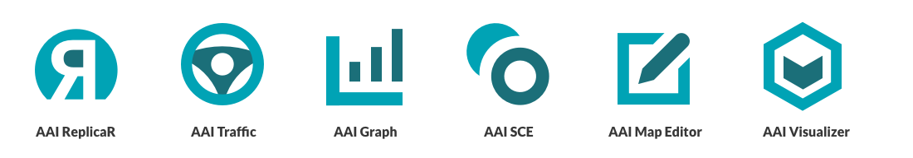
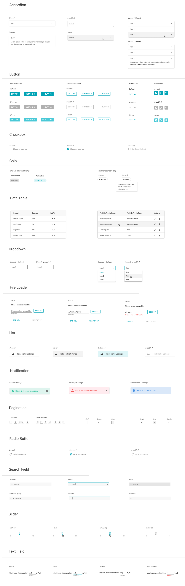
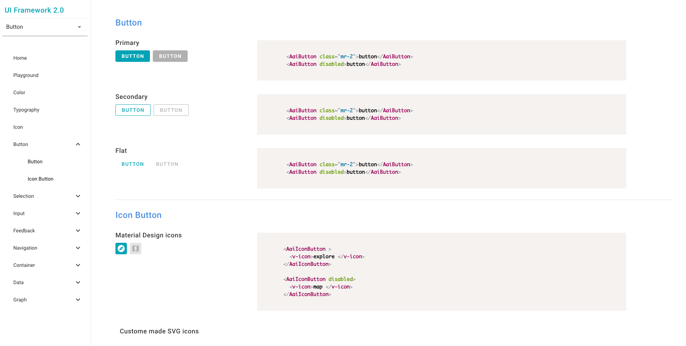
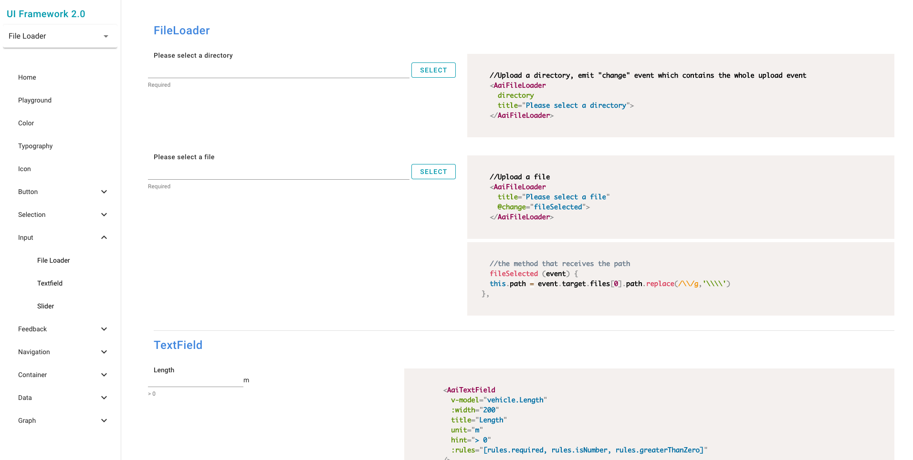
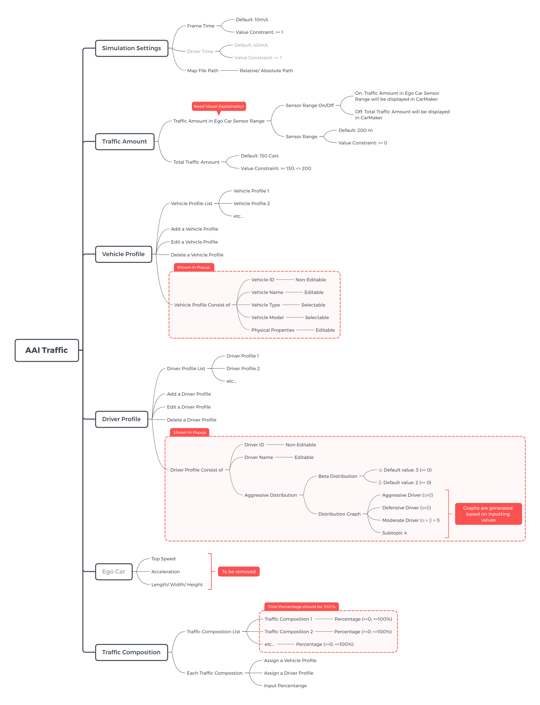
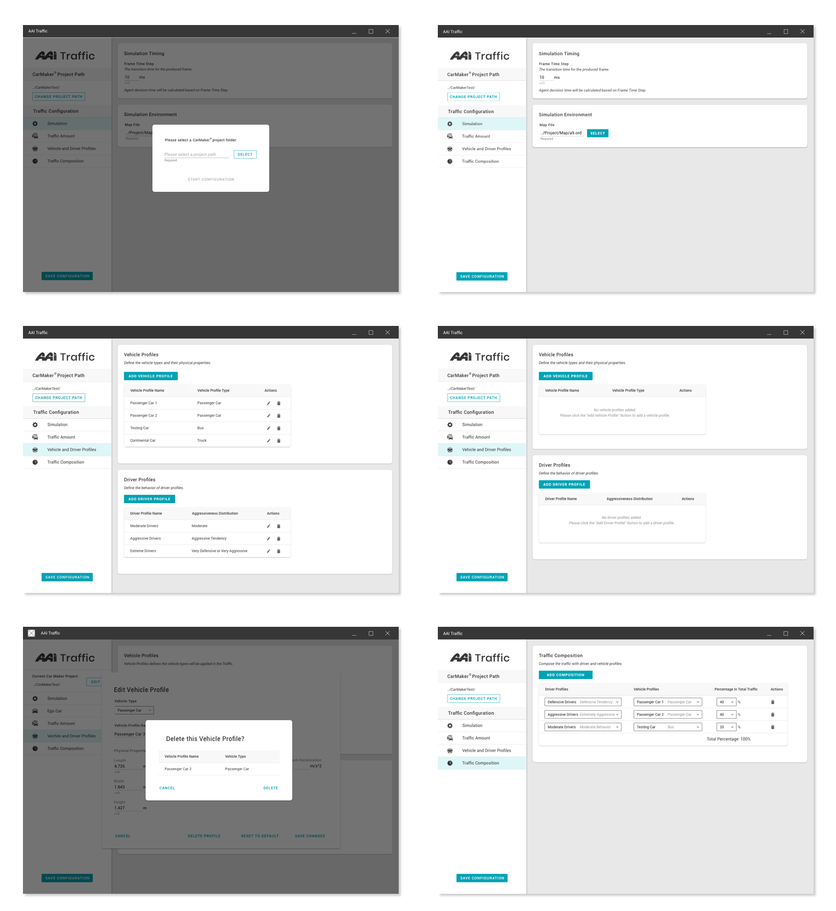
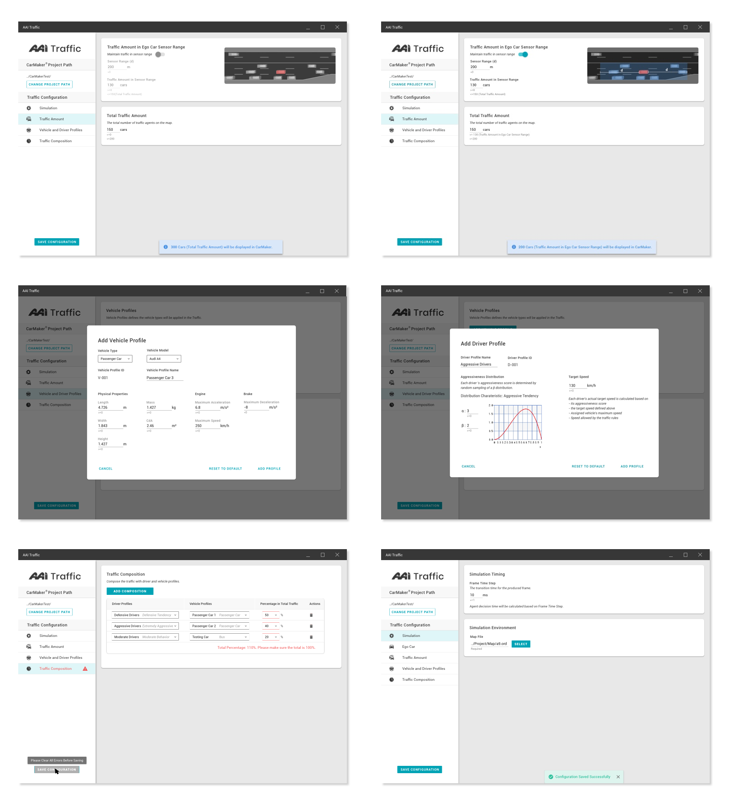
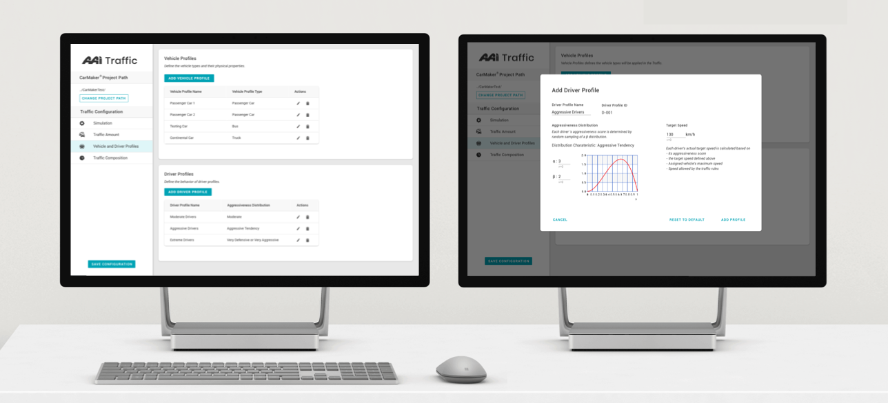
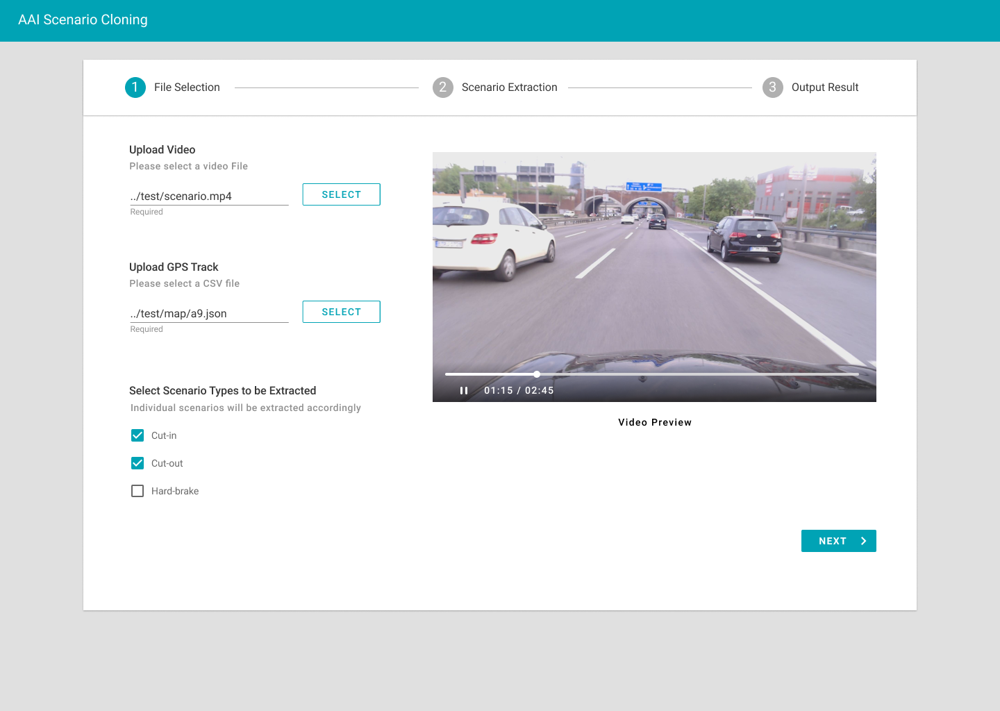
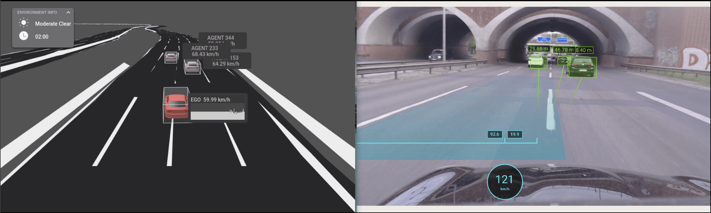

UI Framework and AAI Products
Applying UI Framework in AAI Product Family
Project info
Design and development of UI Framework.
Launched AAI Traffic in July. 2019
Launched AAI Traffic in July. 2019
MY ROLE
Created and maintained Design System.
Collaborated in development of UI Framework.
Applied the design in product family.
Collaborated in development of UI Framework.
Applied the design in product family.
THE BRIEF
As shown below, there are a series of AAI products and modules in the roadmap. To keep a clean, consistent and thoughtful design, an UI framework (Design system) is of great importance.
On the design side, it can help us to efforts on communication about alignments with front-end developers. On the implementation side, it can also be more efficient to utilize customized components.
On the design side, it can help us to efforts on communication about alignments with front-end developers. On the implementation side, it can also be more efficient to utilize customized components.

Design | UI LIBRARY
We created the UI library, which includes the styling and components. To make it more useful, we used the DSM platform from InVision to easily share the library between designers in the team.
UI Components

FRONT-END | UI Framework
I also contributed in the development of the implementation of UI Framework. It was created based Vue.js, and then cutomized according to our design.


AAI tRAFFIC -- aPPLY UI FRAMEWORK
We applied the UI Framework in our product family. One example is the AAI Traffic. After we defined the user flow about the product, we quickly created a hi-fi prototype based on our design UI library. Moreover, it was more efficient to implement using the framework. The product has been launched in Summer of 2019.
User Flow

UI Design


AAI Traffic Showcase

AAI Sce

